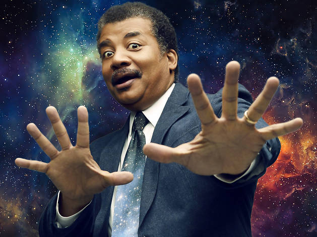

This is...Neil DeGrasse Tyson
The Most Famous Astrophysicist on Earth!!!

Neil deGrasse Tyson (/ˈniːl dəˈɡræs ˈtaɪsən/; born October 5, 1958) is an American astrophysicist, author, and science communicator. Since 1996, he has been the Frederick P. Rose Director of the Hayden Planetarium at the Rose Center for Earth and Space in New York City. The center is part of the American Museum of Natural History, where Tyson founded the Department of Astrophysics in 1997 and has been a research associate in the department since 2003.
Born and raised in New York City, Tyson became interested in astronomy at the age of nine after a visit to the Hayden Planetarium. After graduating from the Bronx High School of Science, where he was editor-in-chief of the Physical Science Journal, he completed a bachelor's degree in physics at Harvard University in 1980. After receiving a master's degree in astronomy at the University of Texas at Austin in 1983, he earned his master's(1989) and doctorate(1991) in astrophysics at Columbia University. For the next three years, he was a postdoctoral research associate at Princeton University. In 1994, he joined the Hayden Planetarium as a staff scientist and the Princeton faculty as a visiting research scientist and lecturer. In 1996, he became director of the planetarium and oversaw its $210-million reconstruction project, which was completed in 2000.
From 1995 to 2005, Tyson wrote monthly essays in the "Universe" column for Natural History magazine, some of which were later published in his books Death by Black Hole(2007) and Astrophysics for People in a Hurry(2017). During the same period, he wrote a monthly column in Star Date magazine, answering questions about the universe under the pen name "Merlin". Material from the column appeared in his books Merlin's Tour of the Universe(1998) and Just Visiting This Planet(1998).
Tyson served on a 2001 government commission on the future of the U.S. aerospace industry, and on the 2004 Moon, Mars and Beyond commission. He was awarded the NASA Distinguished Public Service Medal in the same year. From 2006 to 2011, he hosted the television show NOVA ScienceNow on PBS. Since 2009, Tyson hosted the weekly podcast StarTalk. A spin-off, also called StarTalk, began airing on National Geographic in 2015. In 2014, he hosted the television series Cosmos: A Spacetime Odyssey, a successor to Carl Sagan's 1980 series Cosmos: A Personal Voyage. The U.S. National Academy of Sciences awarded Tyson the Public Welfare Medal in 2015 for his "extraordinary role in exciting the public about the wonders of science".